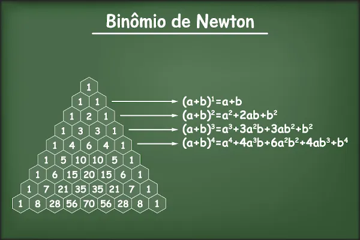
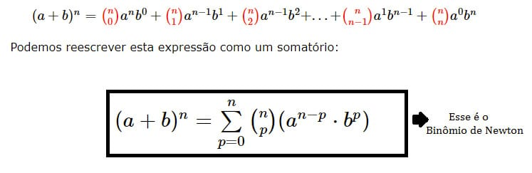

O Binômio de Newton refere-se a potência na forma (x + y)n , onde x e y são números reais e n é um número natural. O desenvolvimento do binômio de Newton em alguns casos é bastante simples. Podendo ser feita multiplicando-se diretamente todos os termos.
Para alguns casos, o cálculo é bastante simples: basta realizar a multiplicação do binômio por ele mesmo utilizando a propriedade distributiva. Até uma potência de ordem 3, desenvolvemos sem muito esforço, pois são os conhecidos produtos notáveis, mas, para potências maiores, calcular a partir da multiplicação do termo por ele mesmo n vezes é bastante trabalhoso.
Triangulo de pascal :
Fórmula binomio de newton :
Video e exemplo :
Bom, o Ultimo item, foi o mais dificil de todos, e o único que eu realmente não entendi nada, e nem se quer na prova consegui fazer algo que envolvesse binômio de newton ,por ser muito confuso e difícil, por isso talvez algumas coisas estejam um pouco erradas nessa parte do portfólio, mas tentei ao máximo fazer tudo sozinho apenas com os PDF's do Sigaa, espero que tenha gostado do Portfólio, foi mais de 4 horas trabalhando o html para ficar perfeito, e mais algumas horas escolhendo e digitando sobre os conteúdos, Muiito obrigado pela atenção! .